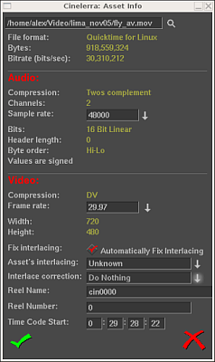

| [ << ] | [ >> ] | [Top] | [Contents] | [Index] | [ ? ] |
Efektuak, transizioak, klipak eta objektuak hemen atzitzen dira. Proiektuan txertatzen diren baliabide gehienak Baliabideen leihotik arrastatzen dira. Baliabideraren kokalekuaren kudeaketa leiho honetan lantzen da baita ere.
Baliabideen leihoa bi areatan zatitzen da. Aurreneko areak karpetak zerrendatzen ditu, bigarrenak berriz hautatutako karpetaren edukia. Joan karpeten zerrendara eta karpeta baten gainean klik egitean, karpeta horren edukia bistaratuko da edukien arean.
Baliabideen leihoa
Karpetak eta edukia ikono edo testu gisa bistara daitezke.
Karpeten edo edukien arean saguaren eskuineko botoiarekin klik eginez laster-menu bat bistaratzen da. Laster-menu honek formatuaren aukerak ditu. Hautatu Bistaratu testua elementuak testu gisa zerrendatzeko. Hautatu Ordenatu elementuak karpetaren elementuak alfabetikoki ordenatzeko.
Kliparen informazio-leihoak hautatutako multimediaren fitxategiari buruzko informazio xehea bistaratzen du. Lehio hau bistaratzeko, joan klipen karpetara eta saguaren eskuineko botoiarekin egin klik nahi duzun fitxategiaren etiketan edo ikonoan. Kliparen menua bistaratuko da, ondoren egin klik Informazioa aukeran.

Kliparen informazio-leihoa
| [ << ] | [ >> ] | [Top] | [Contents] | [Index] | [ ? ] |
This document was generated by Raffaella Traniello on December, 31 2007 using texi2html 1.76.